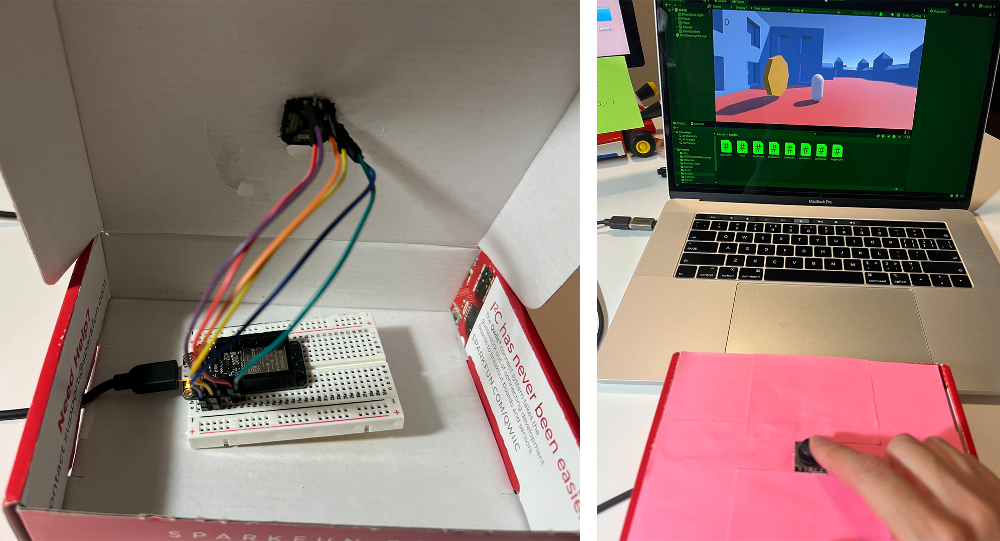

Idea: Use building blocks to build a maze. First, player need to collect 3 stars from different places. Then, player need to find a way get out of the maze.I plan to use joystick to control the movement of player.

Documentation_build city and maze
I really enjoyed the process of building the maze — I like creating order out of chaos. The maze is my imagined version of an old European town. It doesn't have materials applied yet, but it looks pretty good.

Documentation_build city and maze

Documentation_build city and maze
I tried a few different color schemes and ultimately went with red and blue, which feels cheerful.

Documentation_top view of the maze

Documentation_adding coins
For the coin-collecting interaction, I initially referenced Ruby's inclass Unity file and tried copying her script onto my coins, but it didn't work — the player couldn't collect the coins.
I looked up relevant YouTube tutorials, and after a lot of searching, realized that coin collection works differently in 2D vs. 3D games, so the code in the tutorials wasn't directly transferable to my project.
I also tried having VS Code Agent write the script directly, but that didn't work either.
Fortunately, the issue was resolved in class with the Maxim's help. During testing, I noticed some buildings were floating above the ground and adjusted their positions.
Play test, player: Ruby
The video shows Ruby playing the maze game — congratulations to her for completing it on her first try with no guidance.

Add controller, control the player's movement by using the joystick.
The physical computing part wasn't difficult since I'd already learned it last semester and was fairly comfortable with it.
Add sound effects when collecting coins.
Play test, player: Rita

Documentation_put joystick on the box
I cut a hole in the box to expose the joystick for gameplay, but whenever any force was applied, the joystick would fall through. I should buy a few more ESP32s so they can be dedicated to 3D-printed enclosures and won't conflict with other projects that also need ESP32s.
It's kind of exciting — feels like I'm one step closer to making XR.